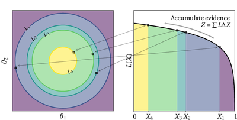

Paper published in Nature Reviews Methods Primer May 12, 2022 1 min read  Andrew Fowlie led a review of nested sampling with researchers from around the world in the prestigious journal Nature Reviews Methods Primer. See the paper or the preprint.